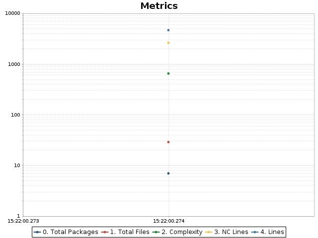
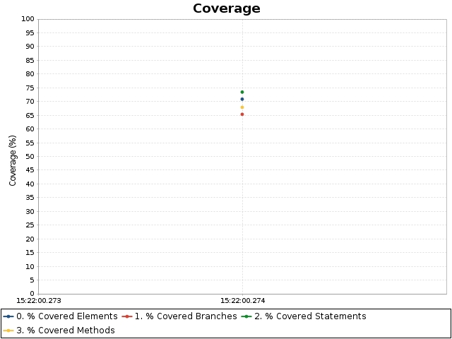

OpenClover
Linked reports
jsoup
Help
jsoup
Coverage overview
Added classes
Changed classes
Charts
Historical coverage report
Date range
From:
Wed Feb 8 2023 15:22:00 MST
To:
Wed Feb 8 2023 15:22:00 MST
Code metrics
Branches:
456
Statements:
1,416
Methods:
380
Classes:
51
Files:
29
Packages:
7
LOC:
4,680
NCLOC:
2,630
Total complexity:
653
Complexity density:
0.46
Statements/Method:
3.73
Methods/Class:
7.45
Classes/Package:
7.29
Average method complexity:
1.72
Branches:
456
Statements:
1,416
Methods:
380
Classes:
51
Files:
29
Packages:
7
LOC:
4,680
NCLOC:
2,630
Total complexity:
653
Complexity density:
0.46
Statements/Method:
3.73
Methods/Class:
7.45
Classes/Package:
7.29
Average method complexity:
1.72
Coverage overview
Conditionals
Statements
Methods
TOTAL
Project
65.4%
73.4%
67.9%
$sortValue
70.9%
Added classes
Changed classes
Charts

